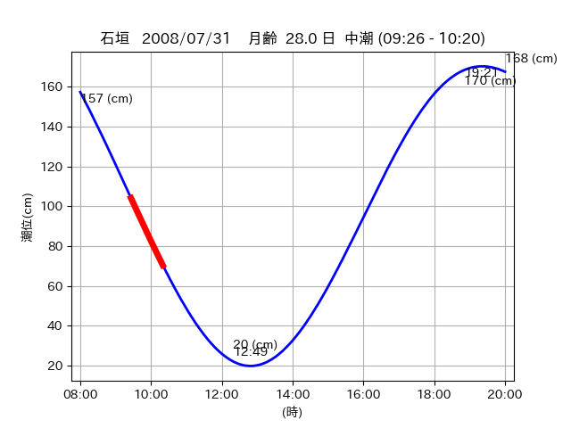

<!DOCTYPE html>
<html>
<head>
    
    <meta http-equiv="content-type" content="text/html; charset=UTF-8" />
    
        <script>
            L_NO_TOUCH = false;
            L_DISABLE_3D = false;
        </script>
    
    <style>html, body {width: 100%;height: 100%;margin: 0;padding: 0;}</style>
    <style>#map {position:absolute;top:0;bottom:0;right:0;left:0;}</style>
    <script src="https://cdn.jsdelivr.net/npm/leaflet@1.9.3/dist/leaflet.js"></script>
    <script src="https://code.jquery.com/jquery-3.7.1.min.js"></script>
    <script src="https://cdn.jsdelivr.net/npm/bootstrap@5.2.2/dist/js/bootstrap.bundle.min.js"></script>
    <script src="https://cdnjs.cloudflare.com/ajax/libs/Leaflet.awesome-markers/2.0.2/leaflet.awesome-markers.js"></script>
    <link rel="stylesheet" href="https://cdn.jsdelivr.net/npm/leaflet@1.9.3/dist/leaflet.css"/>
    <link rel="stylesheet" href="https://cdn.jsdelivr.net/npm/bootstrap@5.2.2/dist/css/bootstrap.min.css"/>
    <link rel="stylesheet" href="https://netdna.bootstrapcdn.com/bootstrap/3.0.0/css/bootstrap-glyphicons.css"/>
    <link rel="stylesheet" href="https://cdn.jsdelivr.net/npm/@fortawesome/fontawesome-free@6.2.0/css/all.min.css"/>
    <link rel="stylesheet" href="https://cdnjs.cloudflare.com/ajax/libs/Leaflet.awesome-markers/2.0.2/leaflet.awesome-markers.css"/>
    <link rel="stylesheet" href="https://cdn.jsdelivr.net/gh/python-visualization/folium/folium/templates/leaflet.awesome.rotate.min.css"/>
    
            <meta name="viewport" content="width=device-width,
                initial-scale=1.0, maximum-scale=1.0, user-scalable=no" />
            <style>
                #map_e8f7a8dc164fcb2128f6eafe0a1b1403 {
                    position: relative;
                    width: 2048.0px;
                    height: 1600.0px;
                    left: 0.0%;
                    top: 0.0%;
                }
                .leaflet-container { font-size: 1rem; }
            </style>
        
</head>
<body>
    
    
            <div class="folium-map" id="map_e8f7a8dc164fcb2128f6eafe0a1b1403" ></div>
        
</body>
<script>
    
    
            var map_e8f7a8dc164fcb2128f6eafe0a1b1403 = L.map(
                "map_e8f7a8dc164fcb2128f6eafe0a1b1403",
                {
                    center: [24.296, 124.165],
                    crs: L.CRS.EPSG3857,
                    ...{
  "zoom": 12,
  "zoomControl": true,
  "preferCanvas": false,
}

                }
            );

            

        
    
            var tile_layer_405f3c39da33dd6984d3a25c2c843669 = L.tileLayer(
                "https://cyberjapandata.gsi.go.jp/xyz/seamlessphoto/{z}/{x}/{y}.jpg",
                {
  "minZoom": 0,
  "maxZoom": 18,
  "maxNativeZoom": 18,
  "noWrap": false,
  "attribution": "\u5730\u7406\u9662\u5730\u56f3",
  "subdomains": "abc",
  "detectRetina": false,
  "tms": false,
  "opacity": 1,
}

            );
        
    
            tile_layer_405f3c39da33dd6984d3a25c2c843669.addTo(map_e8f7a8dc164fcb2128f6eafe0a1b1403);
        
    
            var marker_c99b0f615bc489048b2db6089c9ff12d = L.marker(
                [24.2669, 124.1588],
                {
}
            ).addTo(map_e8f7a8dc164fcb2128f6eafe0a1b1403);
        
    
            var icon_cca6763f92e94a51d8614052211dd470 = L.AwesomeMarkers.icon(
                {
  "markerColor": "orange",
  "iconColor": "white",
  "icon": "info-sign",
  "prefix": "glyphicon",
  "extraClasses": "fa-rotate-0",
}
            );
        
    
        var popup_50b3c830e8983723a84f5e1521f436f8 = L.popup({
  "maxWidth": "100%",
});

        
            
                var html_15b96dd090f7812a25a5a639b81209ba = $(`<div id="html_15b96dd090f7812a25a5a639b81209ba" style="width: 100.0%; height: 100.0%;"><table><tr><td></td></tr><tr><td><center>20080731 No.1 </center></table></td></tr></table</div>`)[0];
                popup_50b3c830e8983723a84f5e1521f436f8.setContent(html_15b96dd090f7812a25a5a639b81209ba);
            
        

        marker_c99b0f615bc489048b2db6089c9ff12d.bindPopup(popup_50b3c830e8983723a84f5e1521f436f8)
        ;

        
    
    
                marker_c99b0f615bc489048b2db6089c9ff12d.setIcon(icon_cca6763f92e94a51d8614052211dd470);
            
    
            var poly_line_2ba751135155ed00a59fb3fafb542dae = L.polyline(
                [[24.2669, 124.1588], [24.2727, 124.1583]],
                {"bubblingMouseEvents": true, "color": "#FF00FF", "dashArray": null, "dashOffset": null, "fill": false, "fillColor": "#FF00FF", "fillOpacity": 0.2, "fillRule": "evenodd", "lineCap": "round", "lineJoin": "round", "noClip": false, "opacity": 1.0, "smoothFactor": 1.0, "stroke": true, "weight": 3}
            ).addTo(map_e8f7a8dc164fcb2128f6eafe0a1b1403);
        
    
            var marker_ce2eb48cc223e938ab95d750f449950c = L.marker(
                [24.2738, 124.158],
                {
}
            ).addTo(map_e8f7a8dc164fcb2128f6eafe0a1b1403);
        
    
            var icon_9204550835183943b12ee74f2d67dc81 = L.AwesomeMarkers.icon(
                {
  "markerColor": "orange",
  "iconColor": "white",
  "icon": "info-sign",
  "prefix": "glyphicon",
  "extraClasses": "fa-rotate-0",
}
            );
        
    
        var popup_76cc1af9b649a21bfce78d01353ca074 = L.popup({
  "maxWidth": "100%",
});

        
            
                var html_26d344ef7340ab4ff5691770209707f7 = $(`<div id="html_26d344ef7340ab4ff5691770209707f7" style="width: 100.0%; height: 100.0%;"><table><tr><td></td></tr><tr><td><center>20080731 No.2 </center></table></td></tr></table</div>`)[0];
                popup_76cc1af9b649a21bfce78d01353ca074.setContent(html_26d344ef7340ab4ff5691770209707f7);
            
        

        marker_ce2eb48cc223e938ab95d750f449950c.bindPopup(popup_76cc1af9b649a21bfce78d01353ca074)
        ;

        
    
    
                marker_ce2eb48cc223e938ab95d750f449950c.setIcon(icon_9204550835183943b12ee74f2d67dc81);
            
    
            var poly_line_75461888720c7c332722bab2cf8890a7 = L.polyline(
                [[24.2738, 124.158], [24.2723, 124.1582]],
                {"bubblingMouseEvents": true, "color": "#00FFFF", "dashArray": null, "dashOffset": null, "fill": false, "fillColor": "#00FFFF", "fillOpacity": 0.2, "fillRule": "evenodd", "lineCap": "round", "lineJoin": "round", "noClip": false, "opacity": 1.0, "smoothFactor": 1.0, "stroke": true, "weight": 3}
            ).addTo(map_e8f7a8dc164fcb2128f6eafe0a1b1403);
        
    
            var marker_21992dbc79565701024bcf5fa4735706 = L.marker(
                [24.294, 124.164],
                {
}
            ).addTo(map_e8f7a8dc164fcb2128f6eafe0a1b1403);
        
    
            var icon_97e5c6108665830ec3e804a186a88e23 = L.AwesomeMarkers.icon(
                {
  "markerColor": "orange",
  "iconColor": "white",
  "icon": "info-sign",
  "prefix": "glyphicon",
  "extraClasses": "fa-rotate-0",
}
            );
        
    
        var popup_66326829438a94e0dcedaf0a4143bad7 = L.popup({
  "maxWidth": "100%",
});

        
            
                var html_441166a1d29138e0be08cccb22b38ec9 = $(`<div id="html_441166a1d29138e0be08cccb22b38ec9" style="width: 100.0%; height: 100.0%;"><table><tr><td></td></tr><tr><td><center>20080731 No.3 </center></table></td></tr></table</div>`)[0];
                popup_66326829438a94e0dcedaf0a4143bad7.setContent(html_441166a1d29138e0be08cccb22b38ec9);
            
        

        marker_21992dbc79565701024bcf5fa4735706.bindPopup(popup_66326829438a94e0dcedaf0a4143bad7)
        ;

        
    
    
                marker_21992dbc79565701024bcf5fa4735706.setIcon(icon_97e5c6108665830ec3e804a186a88e23);
            
    
            var poly_line_65611199289bc00d528871d9f15f4696 = L.polyline(
                [[24.294, 124.164], [24.2978, 124.1654]],
                {"bubblingMouseEvents": true, "color": "#FF00FF", "dashArray": null, "dashOffset": null, "fill": false, "fillColor": "#FF00FF", "fillOpacity": 0.2, "fillRule": "evenodd", "lineCap": "round", "lineJoin": "round", "noClip": false, "opacity": 1.0, "smoothFactor": 1.0, "stroke": true, "weight": 3}
            ).addTo(map_e8f7a8dc164fcb2128f6eafe0a1b1403);
        
</script>
</html>